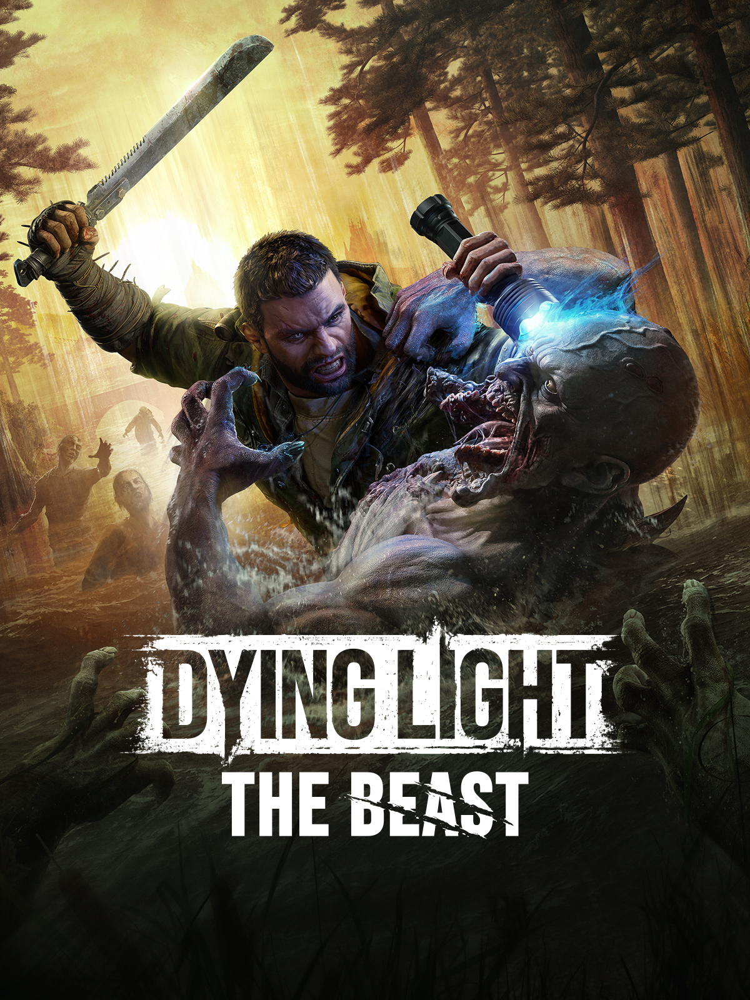
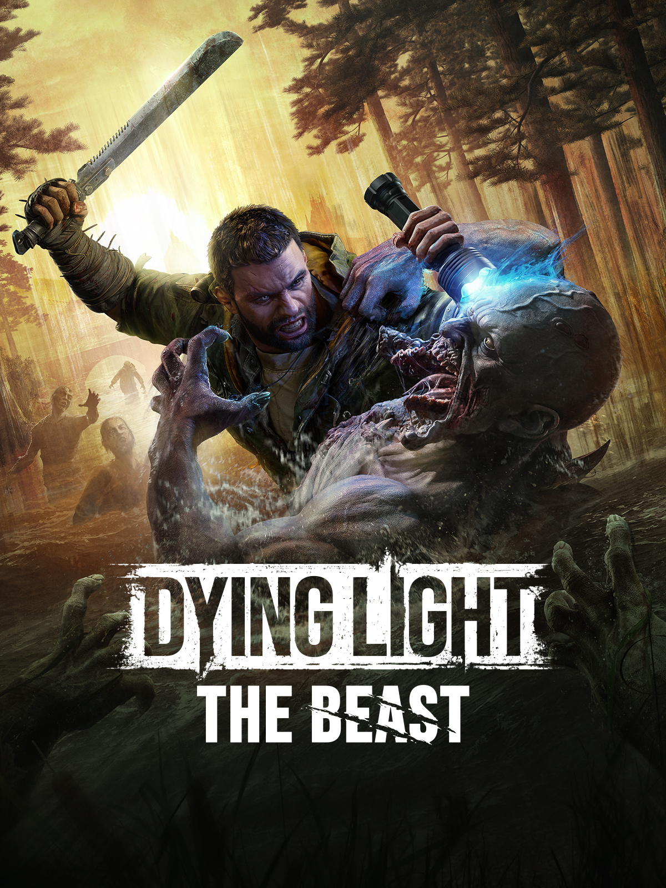

MIS JUEGOS:
Mis gustos en los juego son bastantes variados y me gusta casi todos, a mi me encanta jugar a los juegos de aventuras, los juegos de peleas juegos multijugador, los que menos juego son los juegos de estrategia, ya que yo soy más de ir a lo loco peleando disparando etc..., prefiero el enfrentamiento directo.
Mis juegos favoritos son un gran cantidad como podrian ser Counter Strike, Valorant, Fortnite, Overwatch, Minecraft, Roblox, etc.. . Tengo varios juegos que me gustan mucho pero los que me encanta jugar ya sea por su gran historia, por su gran jugabilidad, por sus grandes gráficos, por sus personajes vendrian a ser:
Todos estos juegos son muy divertidos y me encanta jugarlos, ya que la historia que manejan es muy buena y la jugabilidad es muy buena, los gráficos son muy impresionantes y los personajes son muy interesantes. Los enemigos son muy difíciles de vencer y los jefes son muy difíciles de derrotar, cada vez que vuelvo a jugarlos me siento como un niño en Navidad.

 
